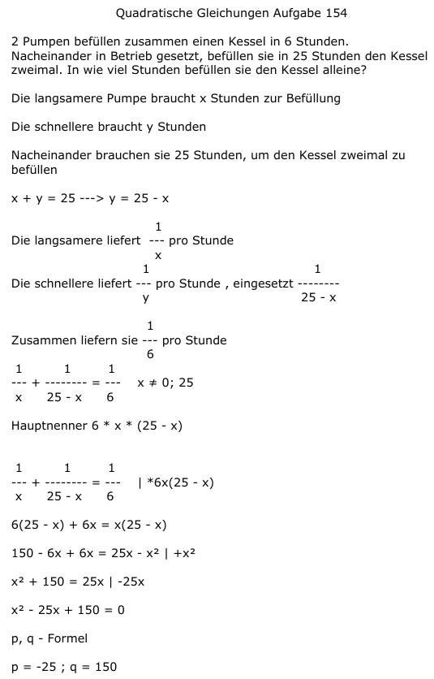

Aufgabe 154 2 Pumpen befüllen zusammen einen Kessel in 6 Stunden. Nacheinander in Betrieb gesetzt, befüllen sie in 25 Stunden den Kessel zweimal. In wie viel Stunden befüllen sie den Kessel alleine? Die langsamere Pumpe braucht x Stunden zur Befüllung Die schnellere braucht y Stunden Nacheinander brauchen sie 25 Stunden, um den Kessel zweimal zu befüllen x + y = 25 ---> y = 25 - x 1 Die langsamere liefert --- pro Stunde x 1 Die schnellere liefert --- pro Stunde , y 1 eingesetzt -------- 25 - x 1 Zusammen liefern sie --- pro Stunde 6 1 1 1 --- + -------- = --- x ≠ 0; 25 x 25 - x 6 Hauptnenner 6 * x * (25 - x) 1 1 1 --- + -------- = --- |*6x(25 - x) x 25 - x 6 6(25 - x) + 6x = x(25 - x) 150 - 6x + 6x = 25x - x2 | +x2 x2 + 150 = 25x | -25x x2 - 25x + 150 = 0 p, q - Formel p = -25 ; q = 150  x1,2 = 12,5 ± 2,5 x1 = 12,5 + 2,5 = = 15 Stunden braucht die langsamere alleine x2 = 12,5 - 2,5 = = 10 Stunden braucht die schnellere alleine